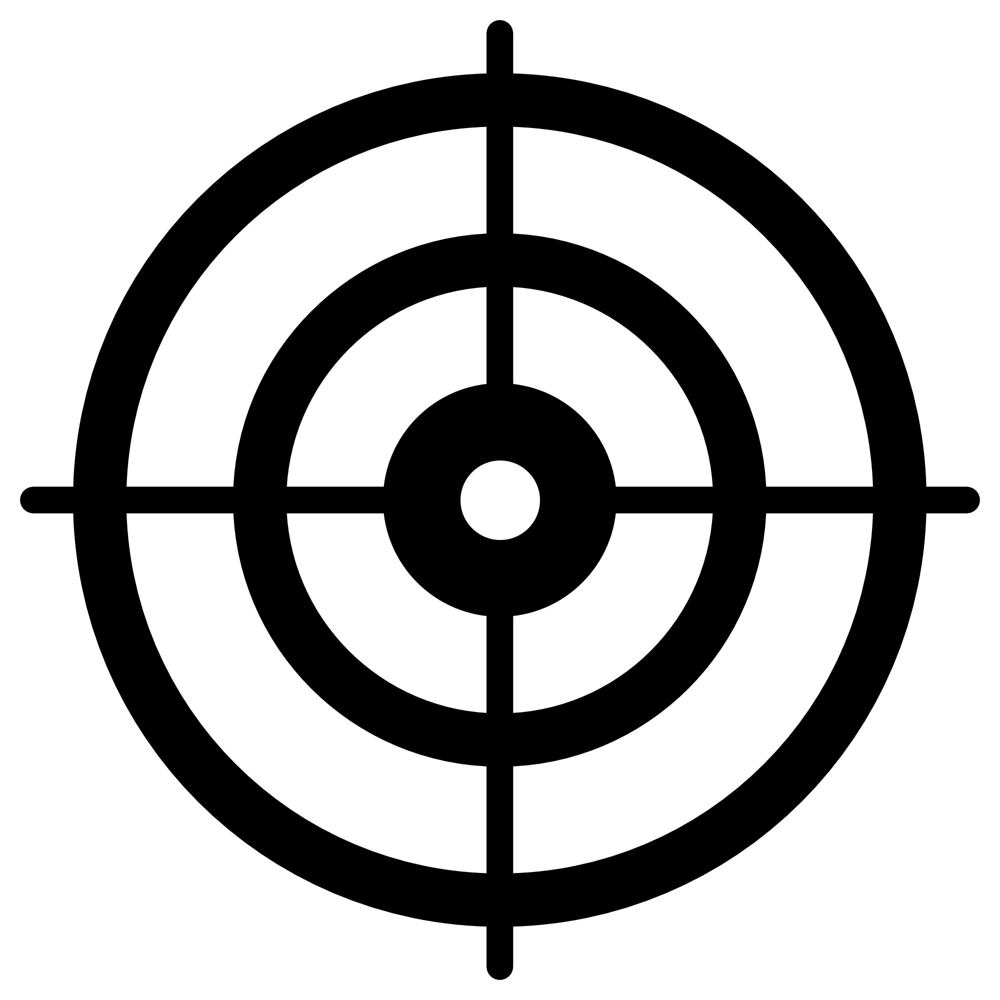

Aim of the Project
LeMuR is an MSCA (Marie Skłodowska-Curie Actions) Doctoral Network (DN) 2021 on Learning with Multiple Representations. The goal of LeMuR is to develop the theoretical foundations and a first set of algorithms for the new “Learning with Multiple Representations” (LMR) paradigm. Moreover, corresponding applications will be developed to demonstrate the usefulness of the new family of approaches.
Specifically, LMR algorithms will allow flexible representations (e.g., suitable for explainability, fairness, …) with diverse target functions (e.g., incorporating environmental or even social impact) so as to make the induced models abide by the Green Charter and trustworthy AI criteria by design. The project will focus on learning with weak supervision because it addresses one of the major flaws of modern ML approaches, i.e., their data hunger, by means of weaker sources of labeling for training data. The outcome of the DN will be a set of 10 experts trained to implement the third and subsequent waves of AI in Europe. The highly interdisciplinary and intersectoral context in which they will be trained will provide them with research-related and transferable competencies relevant to successful careers in central AI areas.
